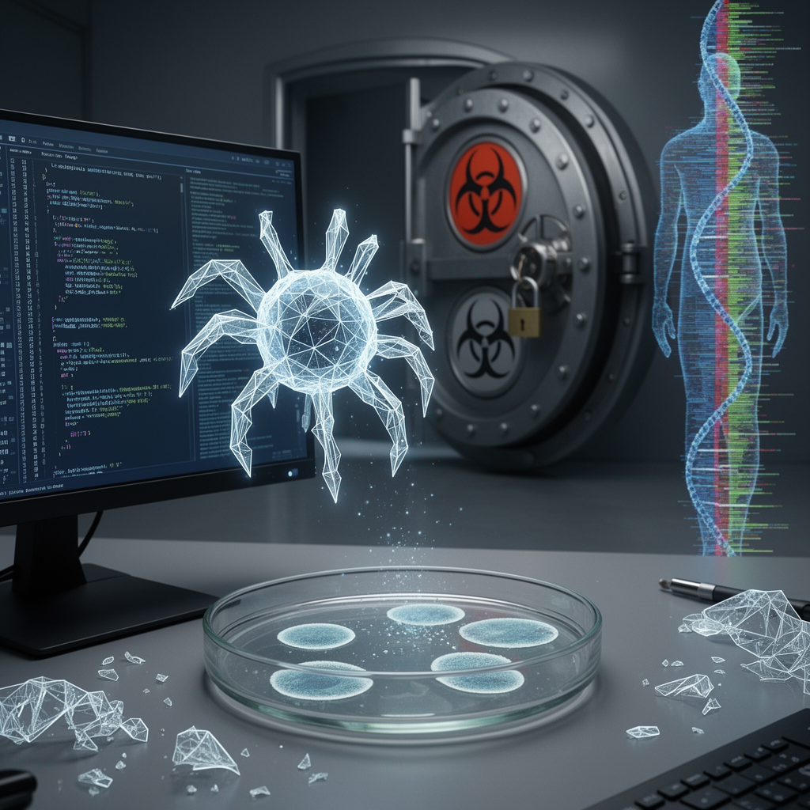

AI Panorama · fly through the Kimi K2.6 edition
This page was written entirely by Kimi K2.6 (Moonshot), as one of the magazine's editions - eight AI models each wrote their own version of every story from the same frozen sources.
The same story in other editions: GPT-5.6 Terra Claude Sonnet 5 Gemini 3.7 Flash Grok 4.6 DeepSeek V4 Pro GLM 5.3 Qwen 3.8 Max
US researchers used AI to design 16 new functional viruses that kill bacteria, a breakthrough for medicine that also raises safety fears.

Researchers at Stanford University have used artificial intelligence to design fully functional viruses that do not exist in nature, and then built them in a laboratory. The 16 new viruses are bacteriophages—viruses that infect only bacteria—and in tests they killed strains of E. coli that resist both antibiotics and natural phages. Published in the journal *Science* on 6 August 2026, the work marks the first time generative AI has produced complete viral genomes that can replicate inside living cells.
## How the AI designs a virus
The AI models, named Evo1 and Evo2, were trained to read and predict genetic code much as chatbots read and predict text. The researchers fed them vast libraries of genetic sequences and asked the system to generate new blueprints for bacteriophages tailored to attack E. coli. Exactly what data went into the training is reported differently: the *BBC* describes training on genetic codes from viruses, bacteria, plants and people, later refined for bacteriophages; *The Guardian* reports training on two million bacteriophages with data from viruses that infect complex organisms deliberately excluded; and CNN notes "millions of sources from all domains of life." Whatever the precise mix, the aim was to teach the model the patterns of natural genomes so it could invent new ones.
The process was not efficient. The AI generated many thousands of possible genomes—CNN reports hundreds of thousands—of which the team selected roughly 300 to synthesise. Only 16 proved viable. But those 16 worked. When placed on dishes of E. coli, they formed clear spots where they had eaten through the bacterial lawn. A cocktail of the new phages overcame antibacterial resistance in strains that shrugged off naturally sourced phages, suggesting a possible path for treating infections that medicine is currently losing.
## Why it matters
That medical promise is significant. Antibiotic resistance is rising, and bacteriophage therapy—using viruses to kill bacteria—is already used for persistent infections. Being able to design phages rapidly, and to tune them so they evade bacterial defences, could expand a clinician's toolkit. Professor Jordi García Ojalvo of Pompeu Fabra University told the Science Media Centre the breakthrough was significant, while Professor Marc Güell called it a "very significant turning point" because it meant biology could begin to be designed on a computer.
## The safety questions
Yet the same capability worries security experts. In an accompanying commentary in *Science*, researchers at the Johns Hopkins Center for Health Security wrote that the findings raise "urgent biosafety and biosecurity questions." They argued that the ability to compose viral genomes with generative AI now exists, while the governance to steer it safely does not. They urged scientists not to pursue AI-designed pathogens that infect humans, animals or plants, warning that such genomes might produce diseases existing countermeasures cannot contain.
The Stanford team took steps to limit risk. They worked only with bacteriophages, which cannot infect humans, and carried out the work in a secure laboratory. According to *The Guardian*, they also excluded genetic data from viruses that infect plants, humans or other animals from at least part of the training process. Dr Brian Hie, the Stanford assistant professor who led the work, argues that existing safeguards can help keep the technology beneficial.
## Harder than it looks
Experts note the work remains far from creating dangerous human pathogens. The new phage genomes contain only about 5,400 base pairs—the chemical letters of DNA. The smallest known genome for a living cell is roughly 500,000 base pairs, and the human genome runs to three billion. Professor Tom Ellis of Imperial College London told *The Guardian* this was "literally the smallest and easiest genome to make," and that designing complex organisms would be vastly harder. Dr Filippa Lentzos of King's College London added that the more immediate biosecurity priority is controlling the physical synthesis of DNA, not just the AI models themselves. A layered approach—restricting dangerous training data, screening orders for synthetic DNA, and enforcing laboratory safety—would address the risk more effectively than focusing on any single step.
There is also the question of efficiency. With only 16 successes from roughly 300 attempts—and from a much larger pool of AI-generated proposals—the technology is not yet capable of churning out reliable biological weapons at the press of a button. Professor García Ojalvo told CNN it was difficult to imagine models automatically generating viable genomes "out-of-the-box."
Still, the milestone is real. For the first time, an AI has written a complete, working genome from scratch. The challenge now is to harness that ability for medicine while building the oversight that keeps it from being misused.
BacteriophageGenome language model
ai-designed-biologybacteriophagessynthetic-biologybiosecurityphage-therapy